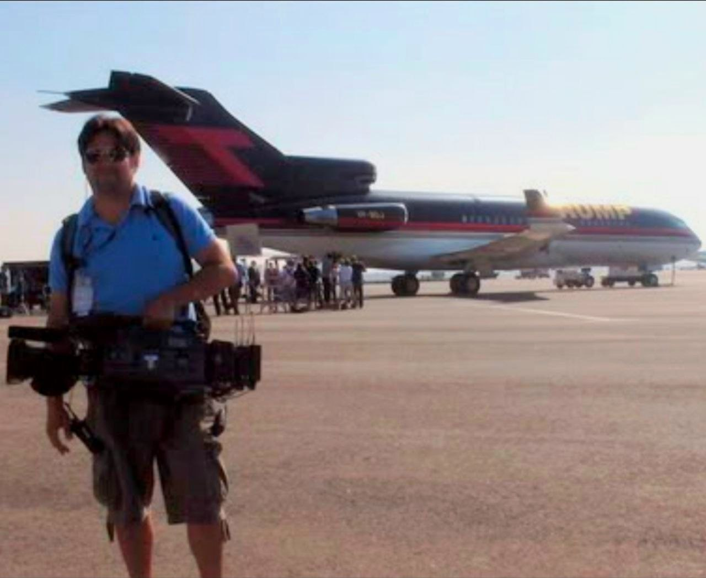
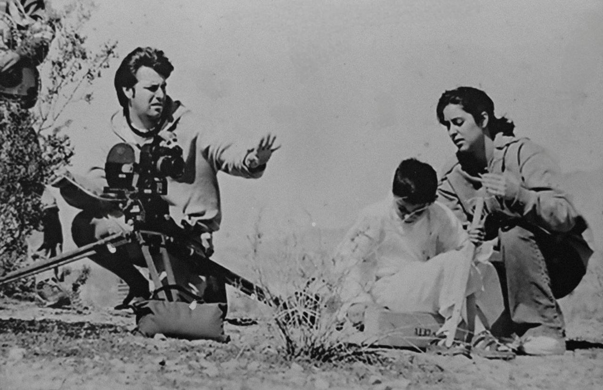
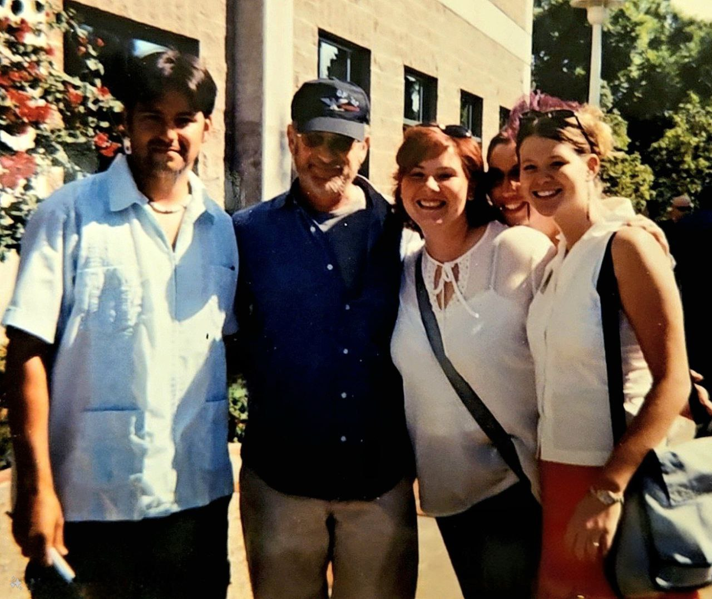
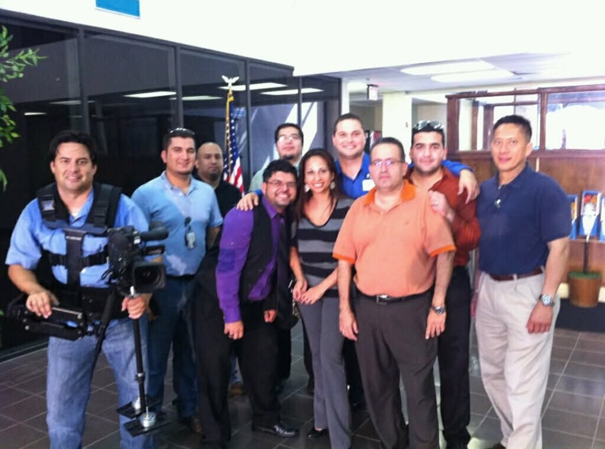
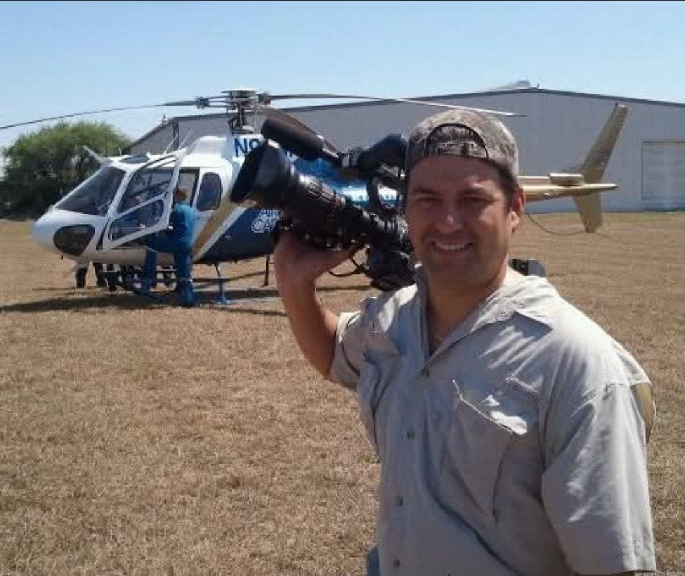
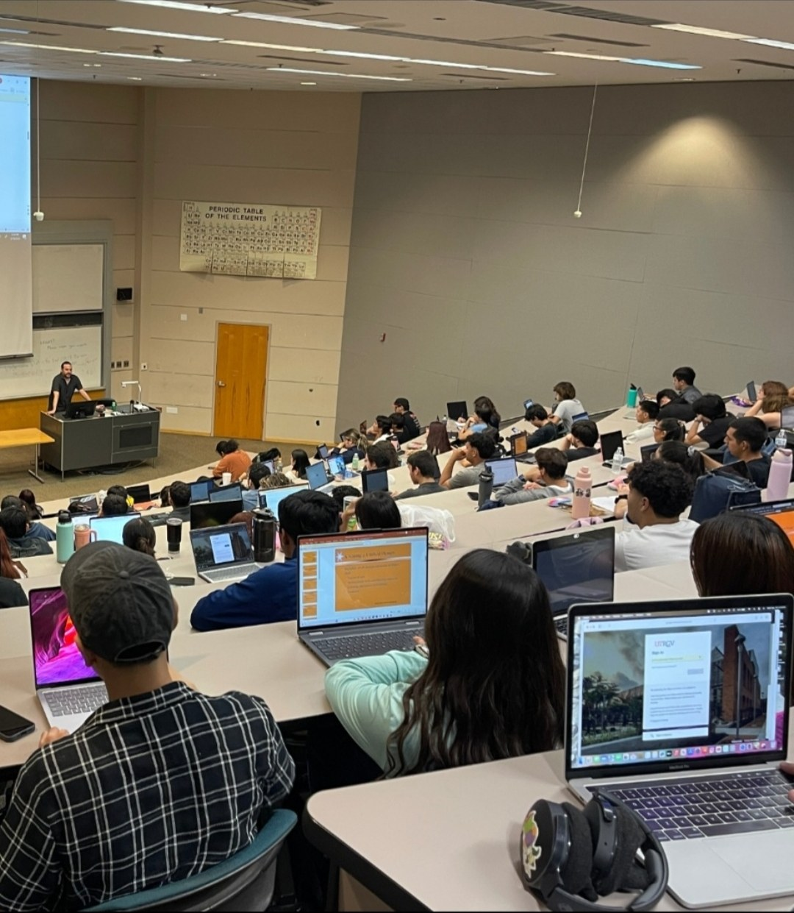

UTRGV Lecturer I
Courses in editing, production, cinema appreciation, and cinema history with a 4.45/5.00 student rating.
Lecturer · Filmmaker · Audio & Bluetooth Innovator
Award-winning filmmaker and Lecturer I at UTRGV specializing in high-fidelity mobile audio workflows, collaborative production training, and camera/editing pedagogy.
Courses in editing, production, cinema appreciation, and cinema history with a 4.45/5.00 student rating.
Seven published research papers on mobile wireless audio, released through ScholarWorks in 2025.
First in the University of Texas System to teach own novel lessons of Chaining Continuity.
Camera and production roles on The Apprentice, America’s Most Wanted, Survivor, and Rockstar.
Lone Star Emma winner and Emmy nominee, plus Kodak & FUJI grants powering 16mm storytelling.
Directed and produced campaign commericials and videos with an 85% win rate for Texas Poloticians.
Proudly representing UTRGV as an expert judge and educator at South Texas film and cosplay conferences.
Discoverer unlocking the "unthinkable" 48-192 kHz on Bluetooth microphones; visit trevinium.com.
 Trevinium · Apps For Filmmakers
Trevinium · Apps For Filmmakers
I’ve developed a string of apps under Trevinium that put professional filmmaking tools on the phones and computers people already own: production sound, editing, script development, editing practice, seeing the invisible, and turning anything on screen into text.

Turns AirPods into a wireless lav mic. Every take saves the untouched 24 kHz original plus a full 48 kHz file, with running timecode.
trevinium.com →
A professional video editor on your phone: magnetic timeline, color wheels and scopes, on-device captions and 4K export. No subscription.
See the page →Interview the characters in your script. Every answer shows the scenes, lines and page numbers it comes from.
See the page →
A film-editing game: cut scenes filmed by six cameras, then get scored against the director’s cut, shot by shot.
See the page →
Twelve detectors in one app: Bluetooth trackers, Wi-Fi, infrared, ultrasound, magnetic fields and more, live over your camera.
See the page →
Two floating buttons over any app: one turns the sound of the video you’re watching into text, the other copies every word on your screen. Fully offline.
See the page →Selected frames from camera, directing, and mentorship moments.






A curated blend of academic rigor, production excellence, and inventive problem solving—each panel maps to a proven initiative.
Editing, production, cinema appreciation, and cinema history instruction across seven courses.
Seven 2025 Bluetooth audio papers bridging classroom demos with production-grade results.
Designs mobile capture workflows that exceed standard Bluetooth profile limitations.
Camera and production support on The Apprentice, America’s Most Wanted, Survivor, and more.
Lone Star Emma nominee, ScreenCraft quarterfinalist, Kodak & FUJI film grant recipient.
Produced political media with an 85% campaign success rate for South Texas leaders.
Guides students through blocking, sound design, and post pipelines for mobile wireless dialogue.
2025 Trevinium patent for host methods enabling full-bandwidth Bluetooth microphone capture.
I prototype in public. Each lab below links process-driven assets with teachable breakthroughs for classroom and production use.
Download the full suite of 2025 Bluetooth audio research papers, plus the AI filmmaking lesson framework.
Evaluates risk, interference, and mitigation strategies for production crews relying on consumer Bluetooth microphones.
Download PDFIdentifies the signal feedback and UI design cues filmmakers need to maintain confidence during mobile capture.
Download PDFDocuments on-set engineering tactics that elevate Bluetooth systems to professional soundstage expectations.
Download PDFComparative technical study of Android and iOS capture paths, including troubleshooting matrices for each ecosystem.
Download PDFConnects blocking, acoustics, and equipment placement to maintain narrative presence when shooting on mobile kits.
Download PDFProvides activation checklists, quality control procedures, and reliability triggers for multi-device orchestration.
Download PDFSynthesizes findings across the series to outline best practices and next steps for wireless capture research.
Download PDFShares University of Texas System lesson plans showing how to translate AI prompts into usable coverage, blocking, and editorial plans.
Download PDFFrom independent sets to university labs—each moment shaped a new tool, a curriculum innovation, or a production breakthrough.
Published seven ScholarWorks papers on mobile wireless audio fidelity and filed the Trevinium patent for extended Bluetooth capture.
Leads editing, production, cinema appreciation, and cinema history courses with a 4.45/5.00 student approval rating.
Built a production company delivering political and commercial media that helped elect 85% of clients.
Produced 100+ videos, launched the county’s YouTube archive, and live-streamed Commissioners Court for the first time.
Supported the Director of Photography for The Apprentice, America’s Most Wanted, Survivor, and Rockstar: Supernova.
Secured $15,000 in film stock grants to produce 16mm shorts including “Lovin’ Scoopful,” screened at Cinesol Film Festival.
Commercial, campaign, and county videos directed, produced, or edited.
Success rate for political media clients between 2012 and 2021.
Research papers authored in 2025 on Bluetooth microphone fidelity.
Film stock grants (Kodak & FUJI) supporting award-winning 16mm shorts.